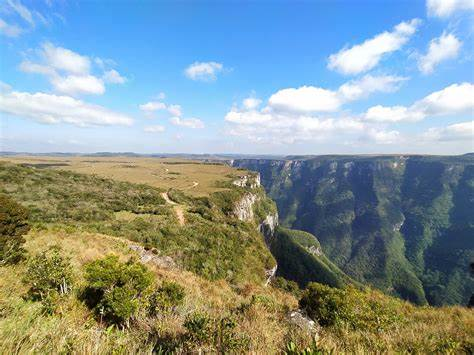

O Morro da Borússia é uma elevação que fica em Osório e se tornou um dos principais pontos turísticos da cidade. É considerado uma zona de proteção ambiental e também uma importante área de Mata Atlântica. Do alto do morro é possível ter uma visão privilegiada da cidade.
O parque que é uma das principais atrações de Cambará do Sul, fica a 10 km do centro da cidade. Oferece atividades de aventura com segurança e é perfeito para contemplação da natureza. A entrada é gratuito, sendo cobrado separadamente as atividades escolhidas.

O parque Ninho das Águias oferece uma linda vista. Para quem não pratica vôo livre, é um bonito passeio. Há vários bancos para sentar e contemplar a natureza e tomar um chimarrão. Aceita a entrada de pets (a minha ficou na guia). A estrutura agora é cercada, e a entrada é paga, 10 reais por adulto. Banheiros bem cuidados, assim como o restante do parque.